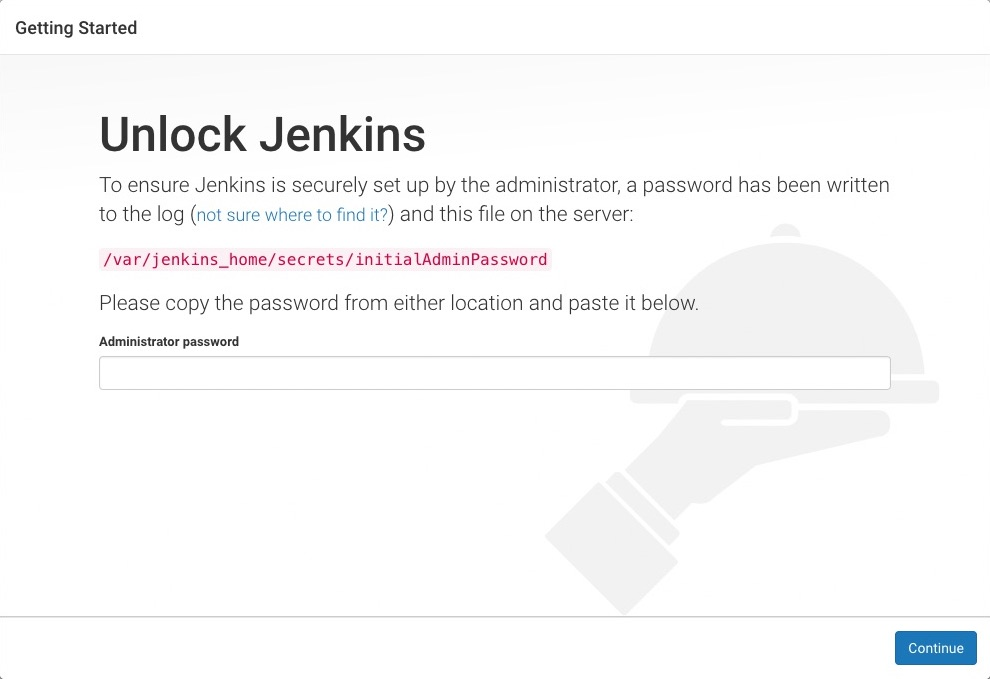
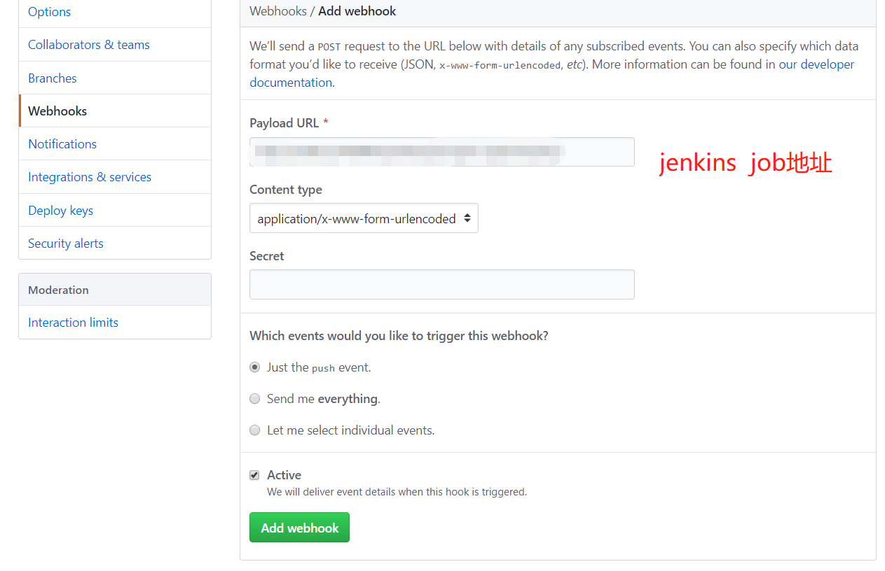
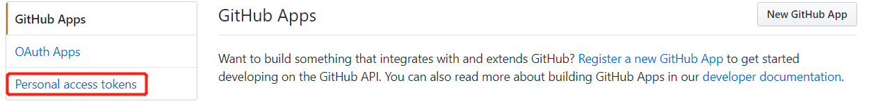
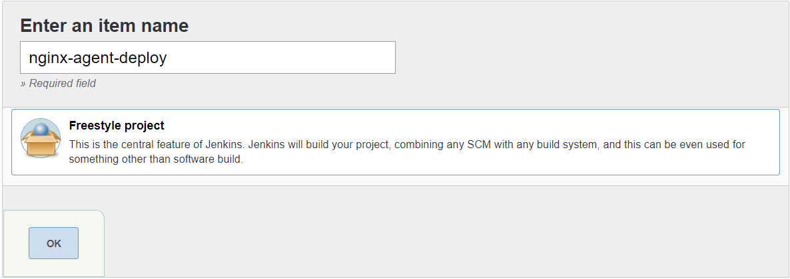

Table of Contents generated with DocToc
Jenkins
jenkins安装
方便起见我们假设jenkins宿主机IP为 192.168.1.2
CICD样例为：
jenkins + github + sornarQube + shell
阿里云ECS
Centos7
环境依赖
系统要求
最低推荐配置:
256MB可用内存
1GB可用磁盘空间(作为一个Docker容器运行jenkins的话推荐10GB)
为小团队推荐的硬件配置:
1GB+可用内存
50 GB+ 可用磁盘空间
软件配置:
Java 8—无论是Java运行时环境（JRE）还是Java开发工具包（JDK）都可以。
安装jdk1.8
yum install -y java-1.8.0-openjdk.x86_64 java-1.8.0-openjdk-devel.x86_64
安装jenkins
wget -O /etc/yum.repos.d/jenkins.repo https://pkg.jenkins.io/redhat-stable/jenkins.repo
rpm --import https://pkg.jenkins.io/redhat-stable/jenkins.io.key
yum install jenkins
调整默认配置
sed -i "s#JENKINS_PORT=\"8080\"#JENKINS_PORT=\"8081\"#g" /etc/sysconfig/jenkins
sed -i "s#JENKINS_ARGS=\"\"#s#JENKINS_ARGS=\"--prefix=/jenkins\"#g" /etc/sysconfig/jenkins
启动并开机自启动
systemctl start jenkins
systemctl enable jenkins
初始化jenkins账号
浏览器访问
http://192.168.1.2:8081/jenkins
根据提示获取管理员初始密码
cat /var/lib/jenkins/secrets/initialAdminPassword
根据提示安装默认插件（默认即可，后续更改插件源地址，按需下载）

根据提示创建新用户
插件管理
浏览器访问 http://192.168.1.2:8081/jenkins/pluginManager/advanced
按需配置代理

更改插件源为国内源
更改为清华源
https://mirrors.tuna.tsinghua.edu.cn/jenkins/updates/update-center.json

安装以下插件
Credentials Binding
github生成webhook
1、登录GitHub，进入要本次构建用到的工程
2、在工程主页面点击右上角的”Settings”，再点击左侧”Webhooks”，然后点击“Add webhook”，如下图：

3、如下图，在”Payload URL”位置填入webhook地址，再点击底部的”Add webhook按钮”，这样就完成webhook配置了，今后当前工程有代码提交，GitHub就会向此webhook地址发请求，通知Jenkins构建：
http://192.168.1.2:8081/jenkins/github-webhook/

4、push触发效果

github生成Tocken

选择 “Personal access tokens”

选择"Generate new tocken"

勾选"repo与 admin:repo_hook"

点击最下方绿色按钮"Generate tocken"，复制该tocken

jenkins配置github Tocken
访问jenkins系统设置页面，找到配置Github 服务器
生成凭据


配置凭据

测试连通性

构建项目
1、创建一个项目
http://192.168.1.2:8081/jenkins/view/all/newJob

常见问题
安装插件时提示：No valid crumb was included in the request
更改配置地址
http://192.168.1.2:8081/jenkins/configureSecurity/)
解决方案： 在jenkins 的Configure Global Security下 , 取消“防止跨站点请求伪造（Prevent Cross Site Request Forgery exploits）”的勾选。

GitHub webhook出发时You are authenticated as: anonymous 403
解决方案：99%是tocken过期了，重新生成并配置